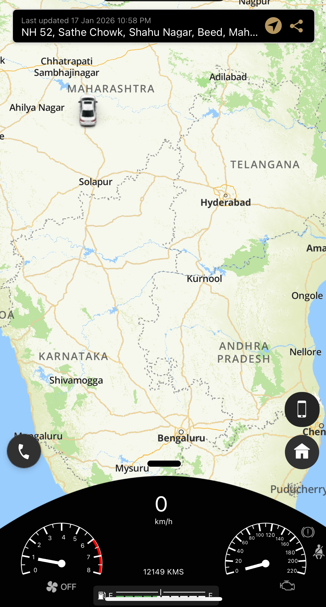
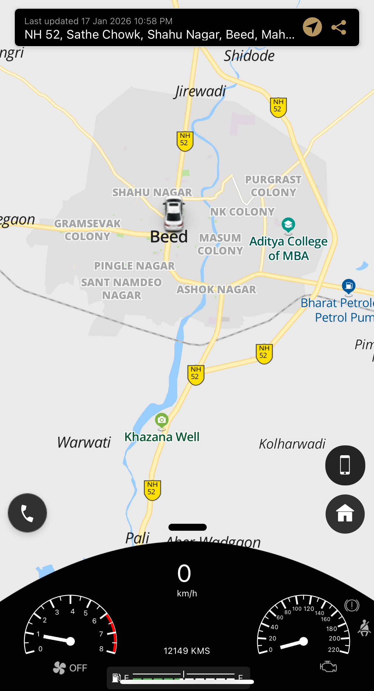

Why I Stopped Guessing
My Car's Width
Two raised lines on the bonnet quietly became my primary reference points during mountain roads, narrow city lanes and tight parking manoeuvres.
A line you stop noticing, and then can't stop using.
Because the raised bonnet flanks remain visible from the driver's seat at almost every angle, they become a subconscious visual guide for judging the vehicle's width — without a glance at a mirror, without a conscious decision.
This doesn't replace mirrors. It complements them, filling the gap in the half-second before a mirror check would even begin.
Where it showed up, unprompted.
Parking
Reversing into tighter bays without the usual back-and-forth mirror checks.
Passing Trucks
Judging clearance on narrow highways without easing off early out of caution.
Hairpin Bends
Placing the car through a bend by feel, on ghat roads with no room for error.
- Effect observed consistently across daylight driving; noticeably reduced at night or in heavy rain, when the bonnet's edges are harder to read.
- This is a personal seating-position observation, not a manufacturer-stated spec — results will vary with seat height and how far forward or back you sit.
- Strongest in low-speed manoeuvres and tight spaces; least noticeable at highway speed, where the reference point matters far less.


You don't calculate the width of your car.
You feel it — and the bonnet flanks are quietly teaching you where the edges are.
Next time you're on a narrow lane or a hairpin bend, notice where the bonnet's shoulder line sits relative to the road's edge before you check your mirror. Then check the mirror anyway — you'll likely find your instinct was closer than you expected.
- This is one driver's adaptation over 16,445 km — it isn't a controlled study, and it isn't guaranteed to develop the same way for every driver or driving style.
- Not yet compared against other Elevate trims, whose bonnet lines may sit slightly differently depending on badge and sensor placement.
- Should never be treated as a substitute for mirrors, blind-spot checks, or a reversing camera — it's a supplement, not a replacement.
None of this was designed to be noticed. That's arguably the point. A line on a bonnet that quietly becomes part of how you sense the edges of your own car is a small piece of engineering doing exactly what it should — disappearing into the background of ownership, and only revealing itself once you go looking for it.